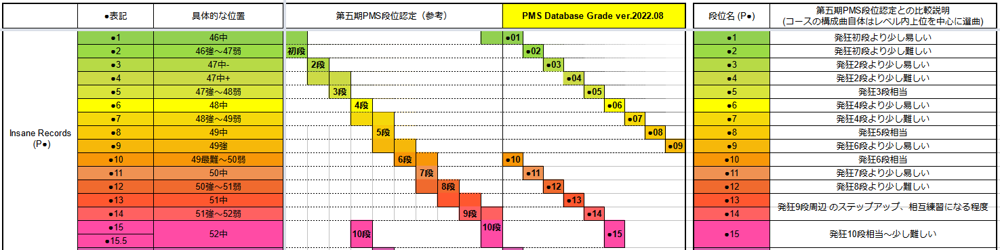
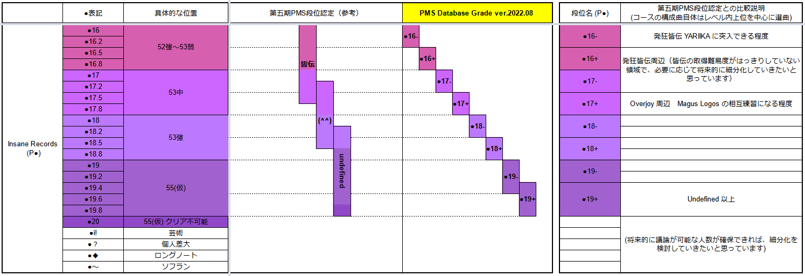

PMSデータベース (Lv46～)
この難易度表について
Lv46以上(発狂●1～20)のPMSを集めた難易度表です。このページのURLは難易度表ツールに対応しており、シンボルとして【P●】を使用しています。
表示に時間がかかります。しばらくお待ちください…
表記等に関する補足説明 (クリックで開閉)
色分け表示
■ 赤 … 新規登録譜面
■ 青 … 直近の難易度変更
■ 緑 … BOFPMS差分企画 登録譜面
■ 黄 … 発狂PMS難易度表 (新) 登録譜面 *内容を同期しています
■ 灰 … 発狂PMS難易度表 (新) の削除、取り下げ譜面
■ 橙 … -
■ 青緑 … -
TOTAL(+増加率) 欄の文字色表示
■ 赤(太字) … ゲージ増加率が 0.1%/note 以下 (おおむね本家 1537ノーツより辛ゲージ)
■ 赤 … 0.1 ～ 0.2%/note
■ 黒 … 0.2 ～ 0.3%/note
■ 青 … 0.3 ～ 0.4%/note
■ 青(太字) … 0.4%/note 以上 (おおむね本家 615～768ノーツより甘ゲージ、スクリーンEX より軽い)
曲名末尾の追記欄
■ [5BUTTONS] … 中央5ボタンのみ使用されている差分です。
■ [LR2IR登録不可] … プレイには差し支えありませんが、LR2の仕様でIR登録が出来ません。 (2024/04) 調査終了に伴い、こちらのタグは削除しました。(対象譜面のログ)
■ [BMSON差分] … BMS ではなく、BMSON というフォーマットで作成された差分です。beatoraja 等の対応本体で再生してください。(LR2 は再生不可)
■ [62進数BMS] … 62進数BMS というフォーマットで作成された差分です。beatoraja 0.8.7 以降のバージョン、または LRbase62 を適用した LR2 で再生してください。
■ [LR2 推奨] [beatoraja 推奨] … 本体プレイヤー固有の拡張定義などが使用されている差分で、推奨される本体プレイヤーです。
■ [LR2 再生注意] [beatoraja 再生注意] … 本体プレイヤー固有の問題があるため、当該の本体プレイヤーを使用している場合は注意してください。詳細は各曲コメントにて。
PMS Database Grade Courses (PDB段位認定 / PDBG) について
PMS Database Grade Courses (PDB段位認定 / PDBG) 企画内で制作したコースを難易度表内に実装しています。
Insane Records (P●1～15)
・ 1レベルごとに1コースで構成します。
・ 他の領域に比べて発狂段位が充実しているため、相互練習向けのコンセプトを重視しています。

Insane Records (P●16～)
・ 発狂PMS皆伝、Overjoy、Undefined へのステップアップ・相互練習に向くように細分化を試みています。
・ 細分化は仮のもので、今後の議論で大きく変動する可能性があります。場合によっては公開後もコースを差し替えるなど、柔軟に対応していきます。

難易度一覧・対応表
※ 難易度査定の一般的なレギュレーションに関しては、About - 難易度基準と査定のレギュレーションについて を参照してください。